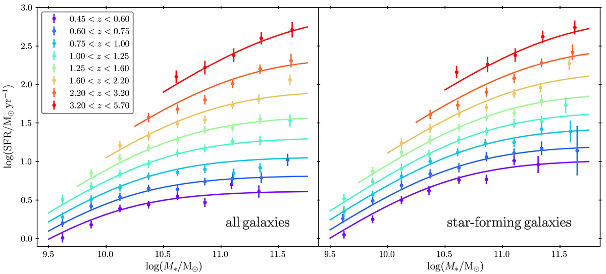
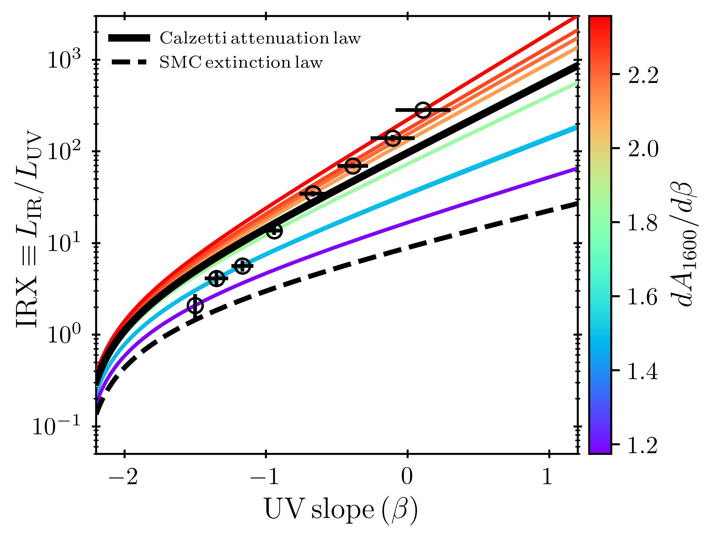
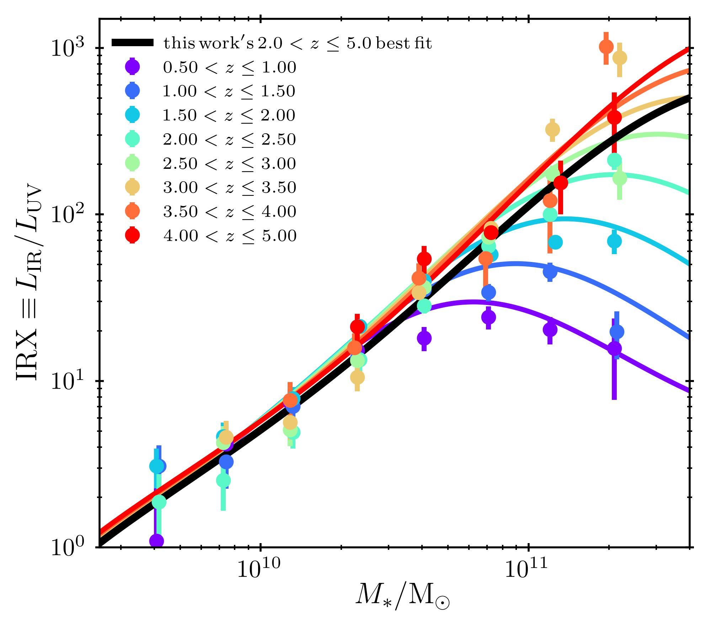
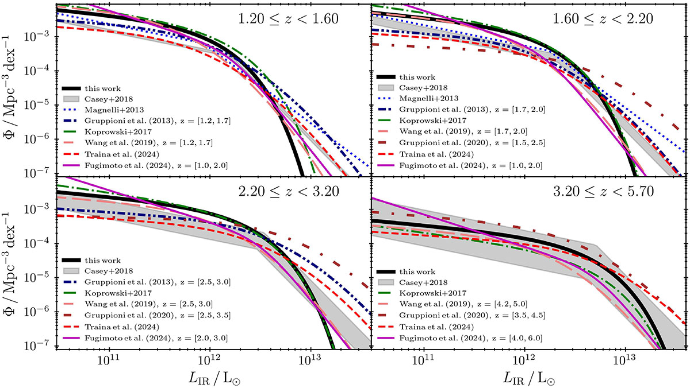
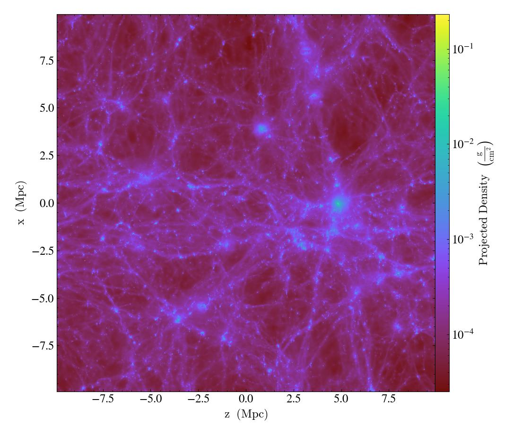
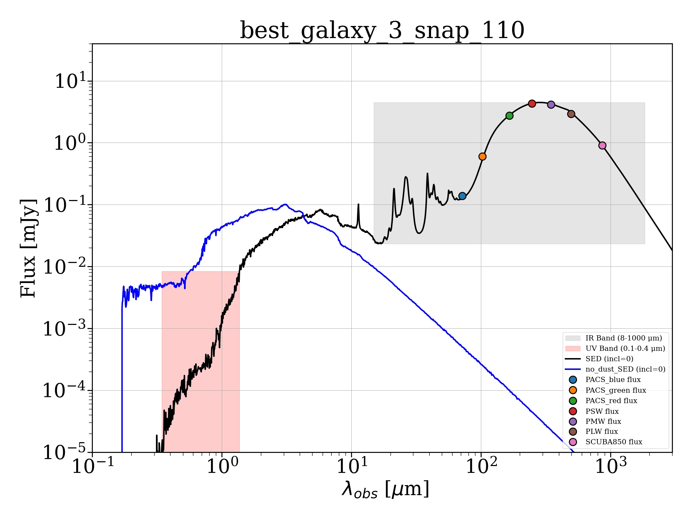

Research Experience
PhD Research
One of the key challenges in observational astronomy is to understand the complete picture of star formation rate density (SFRD) across cosmic time. In this thesis, I aim to build on our previous knowledge by analysing two fields, COSMOS and UDS, and combining them with far-infrared maps from the Herschel Space Observatory and James Clerk Maxwell Telescope (JCMT) to analyse, through stacking, approximately 100,000 K-band-selected galaxies.
Star-Forming Main Sequence and Dust Temperature Evolution
As part of my PhD project, I analysed ~105 star-forming galaxies to characterize the evolution of the star-forming main sequence (SFMS) (Koprowski, Wijesekera et al. 2024, A&A 691, A164). As the second author, I led the stacking analysis of Herschel SPIRE/PACS and JCMT SCUBA-2 imaging, performed infrared SED fitting, and calibrated dust temperatures across redshift.
We demonstrated a significant flattening of the SFMS at high stellar masses and identified a linear increase in peak dust temperature from ~20 K at z = 0.5 to ~50 K at z = 5. Crucially, we showed that discrepancies in earlier SFMS measurements largely arose from assumed dust temperatures rather than intrinsic evolution. This work established a consistent recalibration of infrared-based star formation rates and emphasized the importance of accurate dust SED modeling when interpreting high-redshift galaxy populations.

Figure 1: SFR-M* relations derived in Sect. 4 for the whole (star-forming and quiescent – left panel) and the star-forming (MS – right panel) galaxy samples. The best-fit lines, color-coded with redshift, were derived according to Eq. (8).
Recalibrating Dust Attenuation Laws (IRX–M*)
In a second major project (Wijesekera et al. 2026, A&A), I led the recalibration of dust attenuation using the infrared excess (IRX ≡ LIR / LUV) and its dependence on stellar mass and redshift. We found that the IRX–β relationship matches a standard Calzetti-like curve for redder galaxies (β ≥ −1), but the slope of this curve becomes less steep as stellar mass increases.
We developed a mass-dependent IRX–β calibration where the reddening law slope follows a tight quadratic function on stellar mass, M = log(M* / M⊙). We further identify a tight IRX–M* correlation that increases monotonically but exhibits a significant turnover at the highest masses for z ≤ 2–3, consistent with the suppression of gas accretion and dust growth in the most massive systems.

Figure 1: IRX–β relationship in bins of stellar mass. The black circles show the stacked data (Table 2), with a clear correlation between the stellar mass and the slope of the reddening law, dA1600/dβ. Adopting the mass-dependent model with dA1600/dβ set as a free parameter, best-fit values for the reddening slope were found (last column in Table 2), with the corresponding correlation with the stellar mass derived in Section 4.1 and plotted in Figure 4. For reference, this work’s best-fit relationship (consistent with the Calzetti curve), together with the SMC curve are plotted in solid and dashed lines, respectively.

Figure 2: IRX values median-stacked in bins of M* and redshift (color points with error bars; Table 1). The black line shows the best-fit functional form for the 2.0 < z ≤ 5.0 sample of Figure 3,
while the color solid lines depict the functional forms found at the individual redshift bins, as explained in detail in Section 4.2.
Far-Infrared Luminosity Function and Obscured Star Formation
As second author on Koprowski, Wijesekera et al. 2026, A&A 706, A345, I contributed to a new determination of the far-infrared luminosity function using ALMA AS2UDS and JCMT SCUBA-2 imaging. We estimated the contribution of faint and low-mass sources to the LF. By adding high-resolution ALMA follow-up study of the JCMT SCUBA-2 S2CLS submillimeter imaging, we estimated the contribution of bright and high-mass sources to the bright end of the LF.
Our results found that the evolution of the characteristic luminosity (L☆) increases monotonically with redshift, evolving as L☆ ∝ z1.38 ± 0.07, while the typical number density (Φ☆) stays the same up to z ≃ 2.24 and then declines as z−4.95 ± 0.73 at higher redshift. By summing this evolving LF, we could directly measure the cosmic dust-obscured star-formation rate density up to z ~ 6.

Figure 1: Functional form of the infrared luminosity function found in this work (black solid line). Other IR LFs found in the literature are also shown for comparison (Magnelli et al. 2013; Gruppioni et al. 2013; Koprowski et al. 2017; Wang et al. 2019; Gruppioni et al. 2020; Traina et al. 2024, and Fujimoto et al. 2024). It can be seen that while at the faint end our results seem to be mostly consistent with other works (see Figure 5), the assumed value of the faint-end slope causes the corresponding functions to differ significantly. The shaded region represents the regime bounded at the bottom by the dust-poor models and at the top by the dust-rich models of the early Universe postulated by Casey et al. (2018).
SIMBA simulations
To connect empirical trends with physical mechanisms, I incorporated the SIMBA cosmological hydrodynamic simulation into my workflow. During my residency at the National Centre for Nuclear Research (NCBJ) in Warsaw, Poland, I performed radiative transfer post-processing using powderday, generating synthetic SEDs and JWST-like photometry.

Figure 1: snapshot of redhshift 0.8523904297003797

Figure 2: SED extracted from snapshot of s110 using powderday.
MSc thesis and internship
During my MSc at the University of Padova, I analyzed ALMA CO observations of galaxies at 3 ≤ z ≤ 4, deriving molecular gas masses and depletion timescales using CASA. Although the project was not completed for publication, it provided valuable experience with interferometric data analysis and the reduction of millimeter observations.
Furthermore, during my MSc project, I gained extensive experience with SED fitting using MAGPHYS. This foundational work in multi-wavelength modeling greatly facilitated my transition to and proficiency with CIGALE for my doctoral research.
Internship | SISSA in Italy (Scuola Internazionale Superiore di Studi Avanzati)
During an internship at SISSA, I worked on broadband X-ray spectroscopy of the water megamaser galaxy NGC 4258 (Masini et al. 2022, A&A 663, A87). My primary task was analyzing the X-ray spectrum using the XSPEC spectral fitting software. In particular, I modeled the nuclear emission using physically motivated torus models, including Torus and BORUS, which describe X-ray reprocessing in obscuring AGN structures. I was responsible for fitting the spectra and extracting key physical parameters such as column density (NH), photon index (Γ), and torus covering factor. This experience provided valuable training in spectral modeling and parameter inference, and broadened my perspective on how energetic processes associated with active galactic nuclei influence the interstellar medium and galaxy evolution.
.jpg)
.jpg)
.jpg)